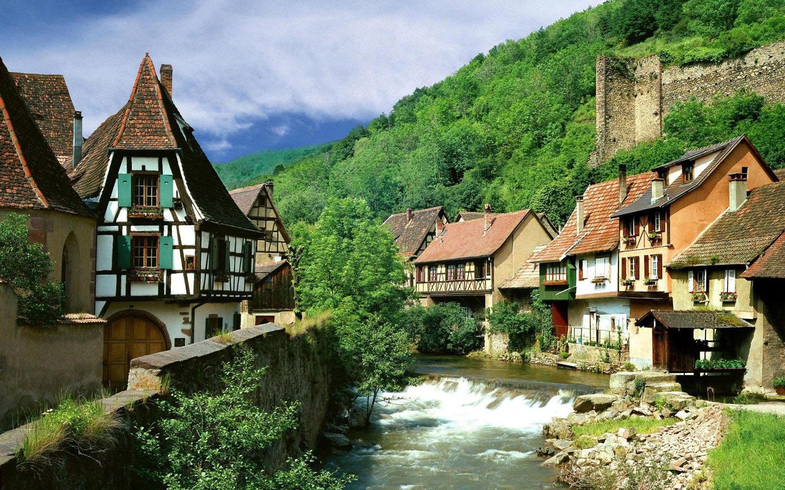

Grčka - opis
GRČKA, zvanično Republika Grčka, smeštena je na krajnjem jugoistoku Evrope, na jugu Balkanskog poluostrva. Graniči se sa Albanijom, Republikom Makedonijom, Turskom. Obuhvata površinu od 132 000 km2. Pored kontinentalnog dela obuhvata preko 1400 ostrva. Obala joj je razuđena sa dužinom od 13 676 km, reljefno je pretežno planinska, a na planini Olimp je najviša tačka sa visinom od 2911 m.
Grčka ima nešto manje od 11 miliona stanovnika, a najviše njih je koncentrisano oko tri najveća grada, Atine, koja je i glavni grad, Soluna i Patre. 95% stanovništva čine grci, stoga je Grčka jedna od etnički najhomogenijih zemalja. U verskom pogledu dominira pravoslavno hrišćanstvo, okupljeno oko Grčke pravoslavne crkve i Carigradske patrijaršije.

Crna Gora - opis
CRNA GORA je smeštena u jugoistočnoj Evropi, na Balkanskom poluostrvu. Crnogorski gradovi protkani arhitekturom raznih perioda oduzimaju dah i na trenutak vraćaju u vreme kada su nastajali. More, jezera, kanjoni, planine omogućavaju da svako pronađe najbolji način da se kvalitetno odmori. U jednom danu, radoznali putnik može sebi priuštiti jutarnju kafu na jednoj od mnogobrojnih plaža Budvanske rivijere, ručak uz pesmu ptica na Skadarskom jezeru i večeru uz ognjište na obroncima velelepne planine Durmitor. Sve to odlikuje Crnu Goru kao turisticku destinaciju koja ima dosta toga da pruži.

Hrvatska - opis
HRVATSKA je država u južnoj Evropi čiji je glavni grad Zagreb.Ona je geografski panonska, sredozemna i balkanska zemlja. Hrvatska ima oblik potkovice koja se proteže od Vukovara na severoistoku preko Zagreba na zapadu do Dubrovnika na krajnjem jugu. Reljefno i klimatski je vrlo raznolika zemlja.

Rusija - opis
RUSIJA - savezna je država koja se prostire u istočnoj evropi i severnoj Aziji. Rusija je najveća država na svetu. Po broju stanovnika je na devetom mestu na svetu. Zvanični jezik je ruski a glavni i najveći grad je Moskva. Rusija je jedina država na svetu koja izlazi na dvanaest mora. Planinski lanac Ural, koji razdvaja Rusiju na evropski i azijski deo, najstariji je planinski lanac na svetu. Površina Sibira je 9,6 miliona kvadratnih kilometara što čini 9% ukupne zemljine površine.

Švajcarska - opis
ŠVAJCARSKA - Švajcarska konfederacija je bogata i uređena zemlja u srcu Evrope, nadaleko čuvena po satovima, siru i čokoladi. Najvećim delom svoje teritorije obuhvata Alpe, sastoji se od 26 kantona, ravnopravni jezici kojima govori oko sedam i po miliona stanovnika su francuski, nemački, italijanski i romanš (retoromanski jezik kojim se služi oko 35.000 ljudi u kantonu Graubinden). Glavni grad je Bern, dok je valuta i posle svih pritisaka Evropske unije ostao franak. Većinu stanovnika čine rimokatolici, ali odmah za njima su protestanti i prema poslednjem popisu preko 20 procenata stanovnika čine stranci.